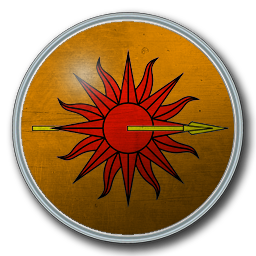
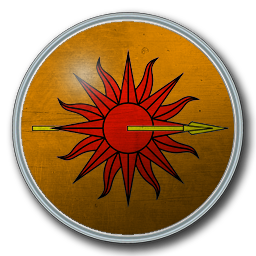

La maison Targaryen est célèbre à bien des égards. Tout d’abord, il s’agit de la famille ayant conservé la royauté pendant plusieurs centaines d’années. A tel point que l’on parle de la « Dynastie des Targaryen » lorsque l’on fait allusion à la maisonnée. Cette noble famille est issue de Valyria, où elle apparait au sortir de l’âge des ténèbres. Les Targaryen vécurent pendant des décennies à Peyredragon, à chevaucher les dragons targaryens afin de préparer la conquête du royaume des Sept couronnes.
Aegon fut à l’initiative de La Conquête avec ses sœurs (Visenya et Rhaenys) et leurs dragons (Meraxès, Vhagar et Balerion). La maison Targaryen a donc obtenu deux nouvelles demeures après La Conquête : Port-Real et Lestival. Cette dernière est située dans les terres de l’Orage mais il ne s’agit plus que d’une ruine désormais. Ceci est probablement dû à ce que l’on appelle la tragédie de Lestival.
La particularité de la maison Targaryen se situe également au niveau du mode de vie de la famille. En effet, chaque roi a disposé d’un surnom représentant sa façon de gouverner mais également sa particularité symbolique. Ainsi, Aegon était considéré comme le "Conquérant" alors que son successeur, Maegar portait le titre de « Cruel ». Les surnoms ne s’arrêtent pas aux caractères et ainsi, ont retrouve Aegon III Targaryen dit le "Fléau des dragons" et même Daenerys Targaryen surnommée "la Mère des dragons" ou "l’Imbrûlée". Les croyances des Targaryen ont toujours été orientées vers la symbolique du feu. Ainsi, les funérailles d’un Targaryen s’achèvent toujours par un bucher funéraire. De nombreuses légendes font allusion à la Mère des dragons, comme une dame ne subissant pas les flammes, il est ici question de Daenerys, qui aura un rôle prépondérant dans la reconquête du royaume des Sept couronnes à l’aide de dragons.
La fin de la dynastie Targaryen a lieu lorsque le Roi Robert Baratheon renversa Aerys II pendant la rébellion de l’an 282. Ce fut le dernier roi Targaryen de la dynastie et le désir de reconquête est au cœur des préoccupations du Trône de fer.


 
